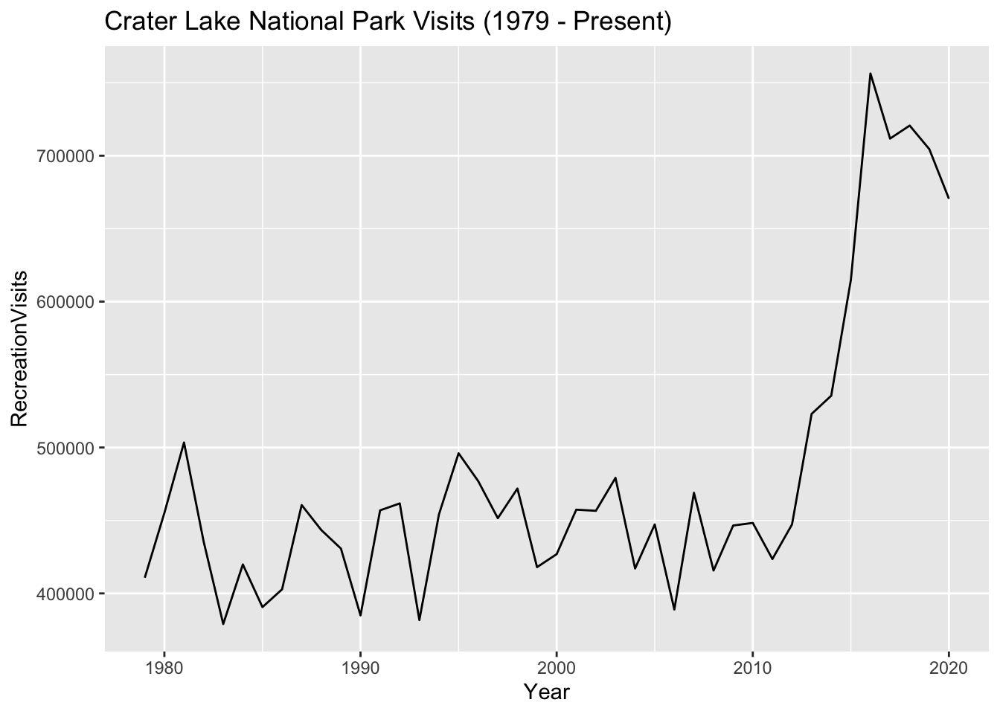
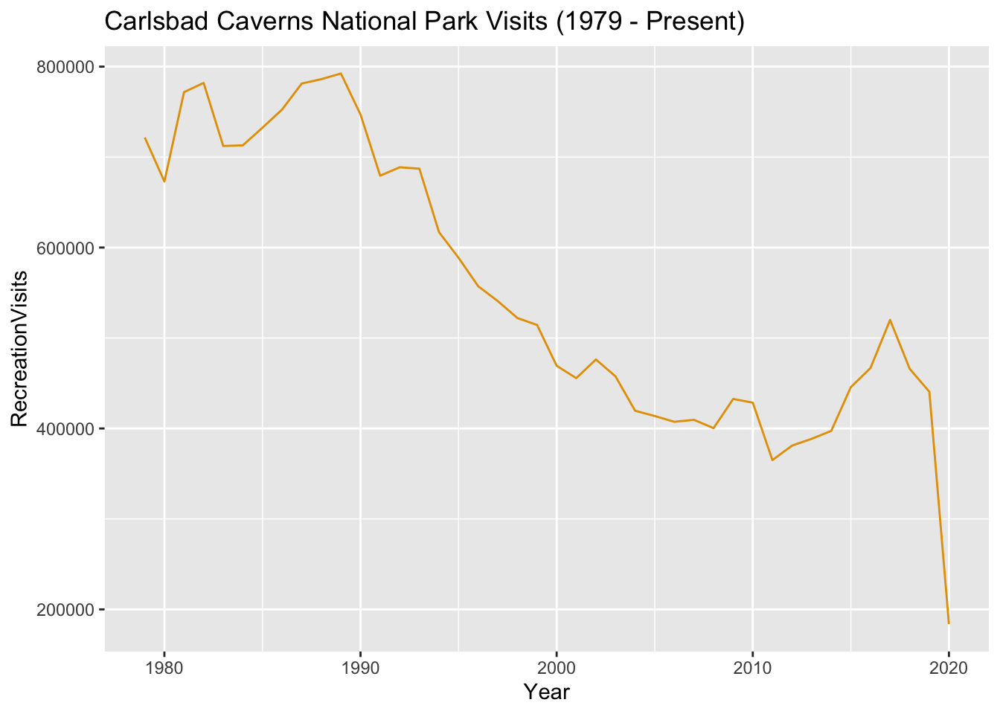
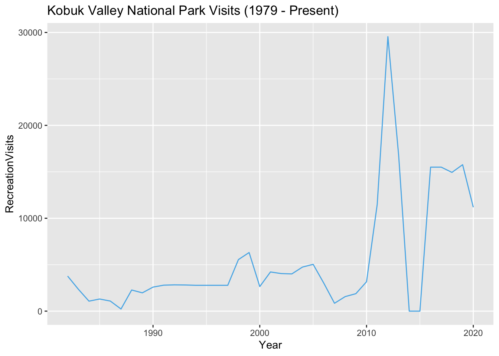
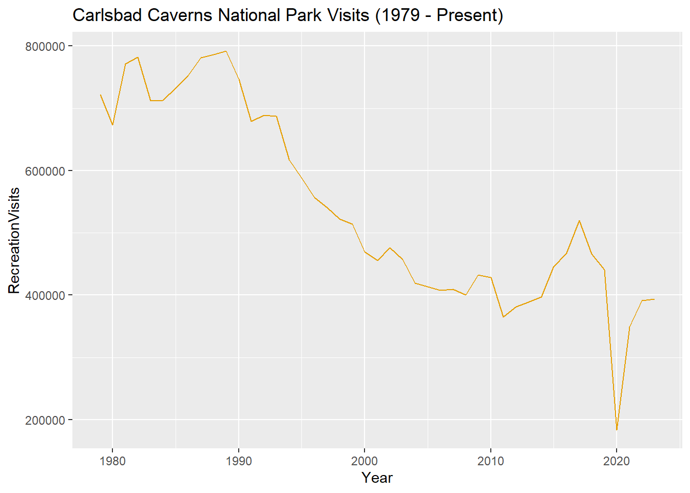

National Park Visitation Data
Introduction
This dataset contains the number of visits, per year, to each of the 63 National Parks administered by the United States National Park Service (NPS), from 1979 to the present. The NPS also collects visitation data for other park units, such as national battlfieds, national rivers, and national monuments. However, information about other park units is not included in this particular dataset.
This particular dataset is drawn from data published by the NPS. Most (but not all) of the contextual information included here draws from material published by the NPS, as well. However, the original data is made available in an NPS data portal that is relatively hard to find, and its documentation is scattered across many different web pages, which is why we believe it is valuable to curate and publish it in a single place here.
This dataset was curated and published by Melanie Walsh, and the data essay was written by Os Keyes and Melanie Walsh.
History
The National Park Service actually began recording information about park visits in 1904 (more than 100 years ago!). However, at this time, their visit collection methods were mostly informal, inconsistent, and low-tech. But over the next century, the NPS worked hard to make their data collection methods more reliable, consistent, and (in some but not all cases) high-tech.
A big catalyst for the NPS getting serious about data collection was a new law. In 1965, the U.S. Congress passed a federal law that was very important for the NPS and for anybody who loves the outdoors: The Land and Water Conservation Fund Act of 1965. This act created a new source of government money specifically dedicated to protecting natural resources (i.e. to buying up land and water so that condo developers couldn’t do it first) and building up outdoor recreation infrastructure in the U.S.
One of the clauses in this act stipulated that the amount of money allocated to each recreation area should be “proportional to visitor use.” Because the NPS can’t function without money, they buckled down on counting visitor use. According to the NPS, over the next twenty years, they “developed and institutionalized a formal system for collecting, compiling and reporting visitor use data.”
While today’s visit data collection system is far more formal and sophisticated than the one that the NPS used in 1904, there are still many inconsistencies, flaws, and limitations in this system. These shortcomings are largely unavoidable. Trying to record every single visit to a National Park — across dozens of different parks and geographic regions, many decades of time, countless different weather conditions and funding situations, and hundreds of millions of people — is pretty much impossible. In fact, one of the reasons that this dataset is so useful and illuminating is because it does a good job of communicating an important point: data can never reflect reality precisely.
However, the NPS visitation data also does a good job of communicating why we might be interested in collecting and analyzing even flawed and approximate data, as we will dig into below.
Where did the data come from? Who collected it?
This National Park visitation data was originally organized and published by the NPS Social Science Program, a specific program tasked with coordinating visitor statistics across the parks. Thousands of staff members were also involved in the data collection process for individual parks, as we will elaborate below.
The original data was made available through the NPS Visitor Use Statistics data portal. Through this portal, you can generate reports and download data for many different park visitation categories and time periods— at both the national and individual park levels.
To download the data included here, we selected the “Query Builder for Public Use Statistics (1979 - Last Calendar Year)” report type. We then selected only National Parks; all possible years (1979-2022); all possible regions; only “Recreation Visits”; the additional fields of “State” and “Region”; as well as the option of an annual summary of visit counts (as opposed to monthly visit counts). We then downloaded this report as a CSV and published it to GitHub for easier access.

## Why was the data collected? How is the data used?
As we’ve already discussed, one of the reasons that the NPS collects visit data is because the government basically requires it. But there are a lot of other reasons that the NPS collects this information.
As the NPS writes on their website, they use visit data to determine which facilities might need more or less attention, which parks might need more or less staff members and programs, and which hiking trails or bathrooms might need more or less maintenance. This information also helps the communities and businesses surrounding the parks understand how they can best share and support resources in a given area — services like emergency vehicles, sanitation, and water. If there are millions more people going on hikes in a particular area, and thus, inevitably, many more people requiring ambulance trips or rescue helicopters, that would be a very important thing for a community to know. It would be dangerous if visitors to National Parks suddenly and unexpectedly called all the emergency vehicles in town.
This visitation data also helps the NPS estimate the beneficial impact, economic and otherwise, that the parks have on nearby communities and the nation at large. These estimations are important because they help the parks advocate for more funding, support, attention, and collaboration.

The data can also be used for a variety of other purposes….
What’s in the data? What “counts” as a visit?
If we open the dataset and look at the first few rows, we will find five columns – “ParkName”, “Region”, “State”, “Year”, and “RecreationVisits”:
Code
# https://statsandr.com/blog/an-efficient-way-to-install-and-load-r-packages/
# Load the dplyr package
library(dplyr, warn = FALSE)
# Load National Park Visitation data
np_data <- read.csv("https://raw.githubusercontent.com/melaniewalsh/Neat-Datasets/main/1979-2020-National-Park-Visits-By-State.csv", stringsAsFactors = FALSE)
## Look at the structure of the dataset
slice_sample(.data = np_data, n = 10)| ParkName | Region | State | Year | RecreationVisits |
|---|---|---|---|---|
| Virgin Islands NP | Southeast | VI | 2001 | 677401 |
| Carlsbad Caverns NP | Intermountain | NM | 1979 | 721647 |
| Joshua Tree NP | Pacific West | CA | 1988 | 955246 |
| Kenai Fjords NP | Alaska | AK | 2003 | 243719 |
| Katmai NP & PRES | Alaska | AK | 1990 | 40778 |
| Hot Springs NP | Midwest | AR | 2012 | 1302505 |
| Dry Tortugas NP | Southeast | FL | 1984 | 11900 |
| Arches NP | Intermountain | UT | 2003 | 757781 |
| Theodore Roosevelt NP | Midwest | ND | 1981 | 702873 |
| Great Sand Dunes NP & PRES | Intermountain | CO | 2010 | 283284 |
The first four are self-explanatory: but why is the fifth labelled “RecreationVisits” rather than “Visits”, or “Visitors”?
The answer is that what this dataset is tracking is more complicated and nuanced than “people who go to NPS properties”. People go to the national parks for a lot of reasons. While many are there for recreation, some travel through the parks, either because a highway runs through or because they live on “inholdings” (private property that is surrounded by a national park on all sides). Because of this, the NPS defines “Recreation Visits” as visits made by people who are not:
using park territory, roads, and facilities for their own convenience or as a part of their occupation. > Reportable non-recreation visits include:
- Persons going to and from inholdings across significant parts of park land;
- Commuter and other traffic using NPS-administered roads or waterways through a park for their convenience;
- Trades-people with business in the park;
- Any civilian activity a part of or incidental to the pursuit of a gainful occupation (e.g., guides);
- Government personnel (other than NPS employees) with business in the park;
- Citizens using NPS buildings for civic or local government business, or attending public hearings;
- Outside research activities (visits and overnights) if independent of NPS legislated interests (e.g. meteorological research).
What this means is that the counts leave out a lot of people. This is worth thinking about when we evaluate what the numbers mean, and how the NPS achieves them (which we’ll discuss more below)
Data and data collection
So now we know what is being collected. But let’s try to understand how it’s being collected. We can do this, in part, by exploring and visualising the data.
For example: let’s visualise the visits to Crater Lakes National Park, from 1979 to the present:
Code
# Load the "ggplot2" package (which we'll be using a lot more)
library(ggplot2)
# Let's also load "ggthemes", which let's us use colorblind-compatible palettes. When we've only got one line, this will just be black.
library(ggthemes)
# And specify the colorblind palette
cb_palette <- colorblind_pal()(8)
# Turn off scientific notation
options(scipen = 999)
# Filter down to Crater Lake National Park
crater_lake <- np_data %>% filter(ParkName == "Crater Lake NP")
# Visualise it
ggplot(data = crater_lake) +
geom_line(aes(x = Year, y = RecreationVisits), color = cb_palette[1]) +
labs(title = "Crater Lake National Park Visits (1979 - Present)")
We see a lot of things in this data - not least of which is a tremendous rise in visitors in the 2010s - but one interesting observation is the sudden drop in visits in 2012. This isn’t caused by fewer people visiting: instead, it has more to do with how visitor numbers are counted.
When it comes to counting visitors, the NPS uses a variety of techniques. At some parks, such as Alcatraz, it is simple: the park is only accessible via (ticketed) boat, and so NPS staff simply count the number of tickets. But other parks may have multiple entrances, and feature visitors arriving via car, bus, or on foot. It quickly becomes impractical to have staff at every entrance, 24 hours a day, just in case someone arrives.
Instead, the NPS uses a variety of techniques - some automated, some manual. These include:
- Induction loop counters - magnetised coils of wire under the road that “trip” when a vehicle passes over them;
- Traffic counters, which manually increment a counter when a vehicle passes through a gate;
- Extracting data from ticketing machines.
Alongside all of that, NPS rangers do, on many occasions, manually count people who arrive - particularly when one of the usual mechanisms doesn’t count. And that’s exactly what happened here; according to the NPS data logs, the induction loop counter at one of the main entrances simply broke in January, and wasn’t repaired for (at a minimum) several months. You can see a similar, but more severe, example at Carlsbad Caverns National Park, where it appears visits entirely tail off in 2020, as a result of the traffic counter being broken for years:
Code
# Filter down to Carlsbad Caverns National Park
carlsbad_data <- np_data %>% filter(ParkName == "Carlsbad Caverns NP")
# Visualise it
ggplot(data = carlsbad_data) +
geom_line(aes(x = Year, y = RecreationVisits), color = cb_palette[2]) +
labs(title = "Carlsbad Caverns National Park Visits (1979 - Present)")
Exercise: thinking about where (and how, and why) mechanisms are likely to break
Reader note: this exercise, when finished, will invite students to explore the question of how device outages are likely to vary based on location. For example: a traffic counter works best when there are few avenues on to a park. Where, geographically and environmentally, is that the case? Or: an induction loop might break when a heavy vehicle snags it. We would expect to see this more in the case of highly snowy areas - where snowplows need to use the roads - and would also expect that damage would take a while to get fixed due to the geographic location. The point is to enable students to explore how data breakages at different locations occur differentially, as do their consequences. Devices breaking is inevitable - but as the different scales of the Carlsbad and Crater Lake outages indicate, they get fixed at different rates, in different locations.
Data and reality
Changes in data don’t only stem from changes in data collection, but also the underlying reality of what is being measured. Let’s take a look at the visitor data from Kobuk Valley National Park:
Code
# Filter down to Kobuk Valley National Park
kobuk_data <- np_data %>% filter(ParkName == "Kobuk Valley NP")
# Visualise it
ggplot(data = kobuk_data) +
geom_line(aes(x = Year, y = RecreationVisits ), color = cb_palette[3]) +
labs(title = "Kobuk Valley National Park Visits (1979 - Present)")
Most people’s eyes will immediately be drawn to the drastic drop in 2014-15, and for good reason! But the cause is familiar: it’s about data collection. As the park report notes, ” The park is developing a new counting system and has made the decision not to report visitor counts until the new system is in place.“.
But another question would be: why the drop-off in 2018-19? It’s too early for the cause to be COVID. Instead, the cause is administrative; government shut-downs in that era led to a reduction of funding, and correspondingly the closure of various attractions at the park. The result: a lack of funding leads to a reduced visitor count - a visitor count that is often used, remember, to argue for funding. This highlights one of the ways in which seemingly-descriptive data used to make decisions can represent the state of those decisions, more than some natural “baseline”.
Another kind of issue of “representing reality” can be found if we look at the visitor data for Mount Rainier:
Code
# Filter down to Mount Rainier National Park
rainier_data <- np_data %>% filter(ParkName == "Mount Rainier NP")
# Visualise it
ggplot(data = rainier_data) +
geom_line(aes(x = Year, y = RecreationVisits ), color = cb_palette[4]) +
labs(title = "Mount Rainier National Park Visits (1979 - Present)")
Once again, we see both a COVID-19 dropoff - but also a continued dropoff beyond that. Looking at the visitation comments explains why; flooding, fires and a blizzard drastically impeded the ability of people to get to the park, and the possibility of areas of the park opening at all.
Compensating for data
As all of this should suggest, NPS data is always somewhat approximate. Reductions in funding, damage to counting equipment, natural events, or simply the inevitably-fallible nature of any data collection means that data requires a certain amount of prediction, guesswork and massaging to look complete.
Sometimes this leads to odd-looking decisions. For example: at Assateague Island National Seashore, there are two entrances (one in Maryland, and one in Virginia). At both entrances, they use a traffic counter to count vehicles. At both entrances, they get from vehicles to visitors by multiplying the number of vehicles by an estimate of how many people each vehicle contains. But at the Maryland entrance, that’s 2.9. At the Virginia entrance, it’s 3.2.
Exerise: compensating for data outages
Reader note: this exercise will direct students, on a group (or individual) basis, to the NPS index of how different parks calculate different multipliers and metrics, and ask them to log or note unusual or unexplained differences in how this is done.
Data decisions
As well as multiplying up, there’s also counting down: some parks register “zero” as the number of visitors they attracted in a year:
Look at the structure of the dataset
Code
# Filter down to just zeros
zero_data <- np_data %>% filter(RecreationVisits == 0)
# Show some of them
slice_sample(.data = zero_data, n = 10)| ParkName | Region | State | Year | RecreationVisits |
|---|---|---|---|---|
| National Park of American Samoa | Pacific West | AS | 2003 | 0 |
| Kobuk Valley NP | Alaska | AK | 2014 | 0 |
| Katmai NP & PRES | Alaska | AK | 1995 | 0 |
| Kobuk Valley NP | Alaska | AK | 2015 | 0 |
Looking at the parks and regions, we can maybe infer why; they are all in extremely rural or underresourced areas, and probably see few visitors to begin with. If we look at the visitors over time for one park that has “zero counts”, Kobuk Valley National park, we see it’s hardly overrun with people even when the count isn’t zero:
Code
# Filter down to Mount Rainier National Park
kobuk_data <- np_data %>% filter(ParkName == "Kobuk Valley NP")
# Visualise it
ggplot(data = kobuk_data) +
geom_line(aes(x = Year, y = RecreationVisits ), color = cb_palette[6]) +
labs(title = "Kobuk Valley National Park Visits (1979 - Present)")
If we look at the visitation comments again, what we see is that “The park is developing a new counting system and has made the decision not to report visitor counts until the new system is in place.” Which is entirely reasonable, in isolation: but we’ve also seen a lot of parks in more highly-frequented areas that have new systems developed and choose to (for example) average previous years, rather than simply declare that nobody visited. What are the politics of the choices in these scenarios?
Exercise: data decisions
*Reader note: in this exercise, users will try to use public data - twitter posts, flickr photos, etc, etc - to try and find situations where people are identifying themselves as being at a park that, officially, has 0 people present at that time Have them go through public data and try to find proof the counts of 0 are “wrong”